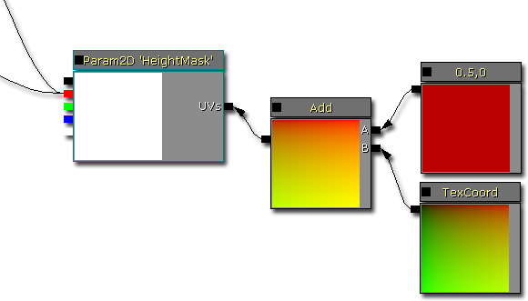
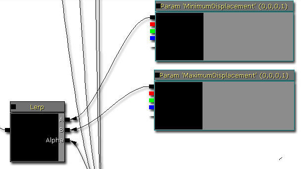
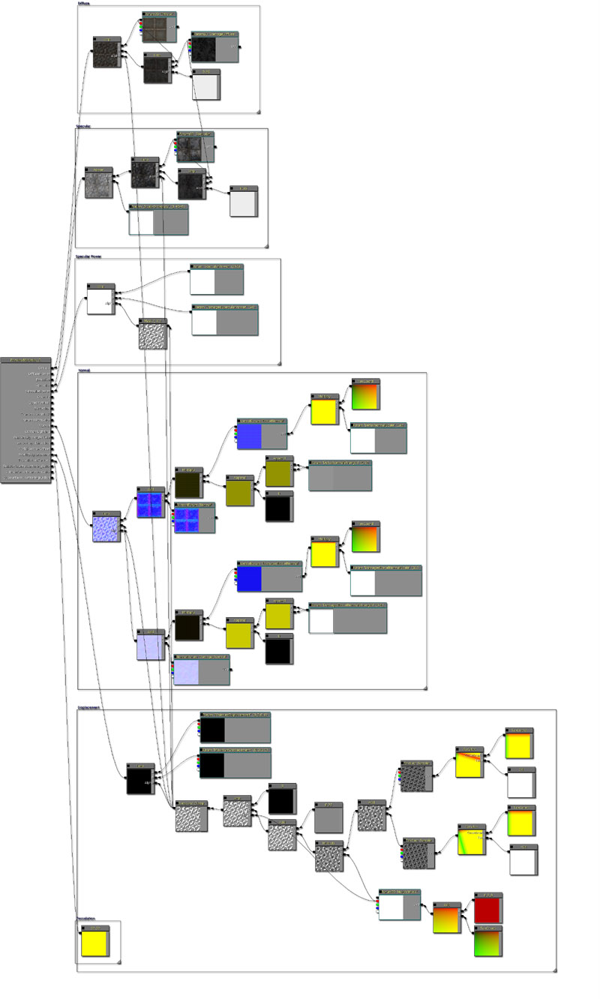
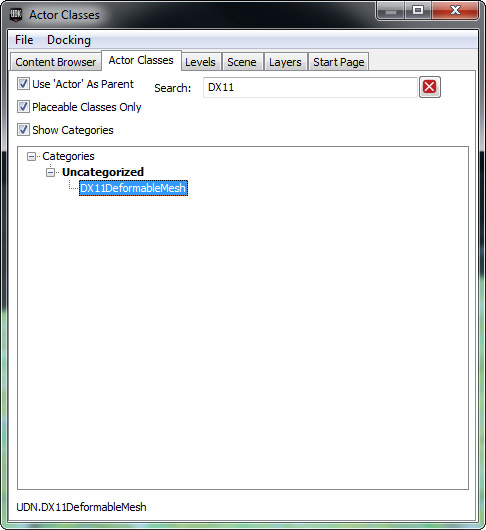
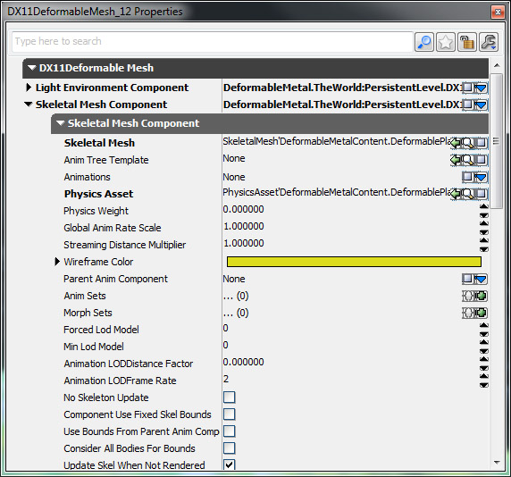
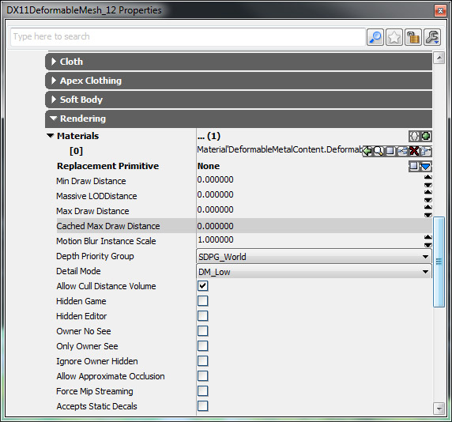
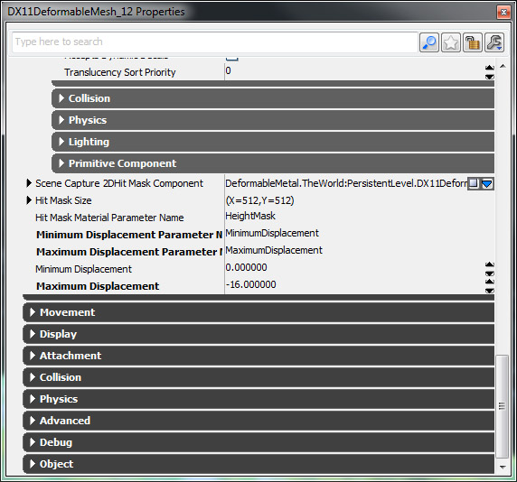
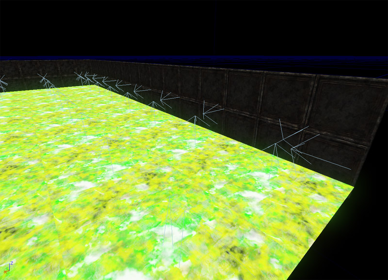

UDN
Search public documentation:
DevelopmentKitGemsRealTimeDeformationCH
English Translation
日本語訳
한국어
Interested in the Unreal Engine?
Visit the Unreal Technology site.
Looking for jobs and company info?
Check out the Epic games site.
Questions about support via UDN?
Contact the UDN Staff
日本語訳
한국어
Interested in the Unreal Engine?
Visit the Unreal Technology site.
Looking for jobs and company info?
Check out the Epic games site.
Questions about support via UDN?
Contact the UDN Staff
实时变形
于 2011 年 6 月对 UDK 进行最后测试
仅适用于附带 DX11 的 PC
概述
在将 DirectX 11 引入到 UDK 中之后，同时增加了实时多边形细分和位移，动态改善虚幻渲染的场景的视觉质量。DirectX 11 中的位移比世界位置位移的功能更加强大，因为它可以使用贴图取样器。只有它可以使顶点位移更加生动有趣。在这篇精华文章中，我们将会讨论如何创建一个可以基于游戏过程交互变形的表面。 在这个屏幕截图中，实时使用 Link Gun 进行所有变形。这里还有两个不同类型的材质，在 Link 射弹冲撞的地方金属墙会弯曲。地板使用的是一个岩石漫反射，而且在变形的时候，它会平移一个矿泥图层，它也会使用一个波浪式仿真替代这个表面。
 注意 ： 如果您想要使用顶点位移，那么需要 DirectX 11，但是在您只是想要使用贴图绘制这个网格物体表面而不使用贴花的时候不需要它。因为在玩家的显卡与 DirectX 11 不兼容时会禁用 DirectX 11，所以着色器将会自动将它关闭。
注意 ： 如果您想要使用顶点位移，那么需要 DirectX 11，但是在您只是想要使用贴图绘制这个网格物体表面而不使用贴花的时候不需要它。因为在玩家的显卡与 DirectX 11 不兼容时会禁用 DirectX 11，所以着色器将会自动将它关闭。
技术设置
这篇精华文章中介绍了两种同时作用产生实时变形的技术。使用击中蒙板存储所有应用到表面上的变形。该组件会自动将这个表面附近的世界坐标转换为 UV 空间坐标，然后将一个圆圈绘制到渲染目标中。在材质中使用点击蒙板，我们可以在两个由正常状态和损坏状态组成的操作之间插入。最后，虚幻脚本会收集在一起，这样可以将它与基于脚本的交互结合起来使用。
SceneCapture2DHitMaskComponent
通常您会按照文档资料中所定义的将电机蒙板组件与指定的贴图坐标结合在一起使用。不幸的是，这个贴图坐标设置与 DirectX 11 的 WorldDisplacement 节点不兼容。但是，经过试验发现如果一个单独的平面引用了整个 UV 坐标设置（同时在两个轴 [0.f - 1.f]），那么只需将查找坐标转变为只使用 [0.5f - 1.f] x [ 0.f - 1.f] 就可以使用点击蒙板渲染目标。无论怎样，它不会限制使用这篇精华文章平整表面。材质
该材质系统会将点击蒙板组件的渲染目标作为在代表变形以及非变性区域的不同着色器分支之间执行线性插入的蒙板。 下面是简单地对点击蒙板组件的渲染目标进行取样的节点。修改后的贴图坐标会补偿必须使用通常在使用点击蒙板组件的时候才需要的 Unmirror U 的特效。只有红色通道才可以用于插入，因为其他通道没有提供任何有用的信息。
下面是将噪点添加给点击蒙板组件的渲染目标的节点。点击蒙板组件只会放置白色的圆圈，它们看起来非常枯燥。通过添加于这些白色圆圈合成的噪点，最终可以应用更加有趣的变形。 下面是供材质使用的位移向量，会将它们应用到提到的材质上。默认情况下将它们设置为 0.f, 0.f, 0.f, 1.f，因为虚幻脚本会改变它们。重点是在这里使用针对旋转的位移向量，否则位移的方向将会发生错误。这些向量在虚幻脚本中进行设置。
下面是供材质使用的位移向量，会将它们应用到提到的材质上。默认情况下将它们设置为 0.f, 0.f, 0.f, 1.f，因为虚幻脚本会改变它们。重点是在这里使用针对旋转的位移向量，否则位移的方向将会发生错误。这些向量在虚幻脚本中进行设置。

在这里，其他材质没有任何其他要讨论的地方。漫反射、高光、高光强度、法线等等都应该使用带有噪点的点击蒙板组件渲染目标进行插入，这样变形的最终效果才会更加明显。
Unrealscript
在这里使用虚幻脚本将技术绑定在一起。当在世界中首次创建这个 actor 时，它会执行 PostBeginPlay() 。PostBeginPlay 与 C++ 中显示的构造函数范式相同。在 PostBeginPlay 中，首先要创建供点击蒙板组件使用的渲染目标。您可以选择通过在 SetFadingStartTimeSinceHit 设置一个正值使损害逐渐消失。这样做将会使“表面”随时间推移返回到正常状态，可以用于诸如绿色墙表面这样的地方。之后，通过使用 CreateAndSetMaterialInstanceConstant 为这个骨架网格物体创建一个材质实例常量。然后创建的材质实例常量会将点击蒙板参数设置为预先创建的渲染目标。最后，根据这个 actor 的旋转量设置位移向量。 当这个 actor 被销毁时，会执行 Destroyed 。为了改善垃圾回收，将所有对象引用都设置为无。 当这个 actor 被销毁时，会执行 TakeDamage 。在这里会更新点击蒙板组件，这样当这个 actor 被 Link Gun（或任何其他枪支）击中的时候会产生实时变形。在这里制作一个简单的特效，然后可以扩展这个效果，仿真其他种类的武器，更小或更大的凹痕。基本上天空是范围。 默认属性只需创建所有需要的对象，并确保 actor 正处于阻塞状态可以发生碰撞。
class DX11DeformableMesh extends Actor
placeable;
var() const LightEnvironmentComponent LightEnvironmentComponent;
var() const SkeletalMeshComponent SkeletalMeshComponent;
var() const SceneCapture2DHitMaskComponent SceneCapture2DHitMaskComponent;
var() const IntPoint HitMaskSize;
var() const Name HitMaskMaterialParameterName;
var() const Name MinimumDisplacementParameterName;
var() const Name MaximumDisplacementParameterName;
var() const float MinimumDisplacement;
var() const float MaximumDisplacement;
var TextureRenderTarget2D HitMaskRenderTarget;
simulated function PostBeginPlay()
{
local MaterialInstanceConstant MaterialInstanceConstant;
local LinearColor LC;
local Vector V;
Super.PostBeginPlay();
HitMaskRenderTarget = class'TextureRenderTarget2D'.static.Create(HitMaskSize.X, HitMaskSize.Y, PF_G8, MakeLinearColor(0, 0, 0, 1));
if (HitMaskRenderTarget != None)
{
SceneCapture2DHitMaskComponent.SetCaptureTargetTexture(HitMaskRenderTarget);
SceneCapture2DHitMaskComponent.SetFadingStartTimeSinceHit(-1.f);
if (SkeletalMeshComponent != None)
{
MaterialInstanceConstant = SkeletalMeshComponent.CreateAndSetMaterialInstanceConstant(0);
if (MaterialInstanceConstant != None)
{
MaterialInstanceConstant.SetTextureParameterValue(HitMaskMaterialParameterName, HitMaskRenderTarget);
V = Vector(Rotation);
V *= MinimumDisplacement;
LC.R = V.X;
LC.G = V.Y;
LC.B = V.Z;
MaterialInstanceConstant.SetVectorParameterValue(MinimumDisplacementParameterName, LC);
V = Vector(Rotation);
V *= MaximumDisplacement;
LC.R = V.X;
LC.G = V.Y;
LC.B = V.Z;
MaterialInstanceConstant.SetVectorParameterValue(MaximumDisplacementParameterName, LC);
}
}
}
}
simulated function Destroyed()
{
Super.Destroyed();
SceneCapture2DHitMaskComponent.SetCaptureTargetTexture(None);
HitMaskRenderTarget = None;
}
simulated function TakeDamage(int DamageAmount, Controller EventInstigator, vector HitLocation, vector Momentum, class<DamageType> DamageType, optional TraceHitInfo HitInfo, optional Actor DamageCauser)
{
Super.TakeDamage(DamageAmount, EventInstigator, HitLocation, Momentum, DamageType, HitInfo, DamageCauser);
SceneCapture2DHitMaskComponent.SetCaptureParameters(HitLocation, 16.f, HitLocation, false);
}
defaultproperties
{
Begin Object Class=ArrowComponent Name=Arrow
ArrowColor=(R=150,G=200,B=255)
bTreatAsASprite=True
End Object
Components.Add(Arrow)
Begin Object Class=DynamicLightEnvironmentComponent Name=MyDynamicLightEnvironmentComponent
End Object
LightEnvironmentComponent=MyDynamicLightEnvironmentComponent
Components.Add(MyDynamicLightEnvironmentComponent)
Begin Object Class=SkeletalMeshComponent Name=MySkeletalMeshComponent
LightEnvironment=MyDynamicLightEnvironmentComponent
bHasPhysicsAssetInstance=true
CollideActors=true
BlockActors=true
BlockZeroExtent=true
BlockNonZeroExtent=true
BlockRigidBody=true
End Object
SkeletalMeshComponent=MySkeletalMeshComponent
CollisionComponent=MySkeletalMeshComponent
Components.Add(MySkeletalMeshComponent);
Begin Object Class=SceneCapture2DHitMaskComponent Name=MySceneCapture2DHitMaskComponent
End Object
SceneCapture2DHitMaskComponent=MySceneCapture2DHitMaskComponent
Components.Add(MySceneCapture2DHitMaskComponent)
CollisionType=COLLIDE_BlockAll
BlockRigidBody=true
bCollideActors=true
bBlockActors=true
HitMaskSize=(X=512,Y=512)
HitMaskMaterialParameterName="HeightMask"
}
在游戏中如何使用 DX11DeformableMesh
在游戏中使用 DX11DeformableMesh 与在虚幻引擎 3 中使用任何其他 actor 一样简单。在内容浏览器、Actor 类选项卡中查找这个 actor。

只要在内容浏览器中选中了这个 actor 后，您就可以在游戏视窗中右击将其添加到世界中。 在这个地方，需要对属性进行设置。您将需要设置骨架网格物体组件属性，例如，骨架网格物体、物理资源和材质。
在这个地方，需要对属性进行设置。您将需要设置骨架网格物体组件属性，例如，骨架网格物体、物理资源和材质。


然后您可能想要调整某些变形属性。确保这个材质参数名称与您所使用的材质互相匹配。
最后，您将需要确保这个 actor 面向的方向指向变形表面所在位置。箭头会帮助您确保您正确地面向他们。使用平面网格物体也可以确保这个方位问题，但是严格地说平面不是这项技术要处理的内容。例如，您可以使网格物体并不是所有部分都可以变形。
结论
通过将多项技术结合在一起使用，可以创造出重要的新技术，增强您的游戏功能并使其与众不同。
下载
- 下载这篇精华文章中使用的内容。

{kind=link}